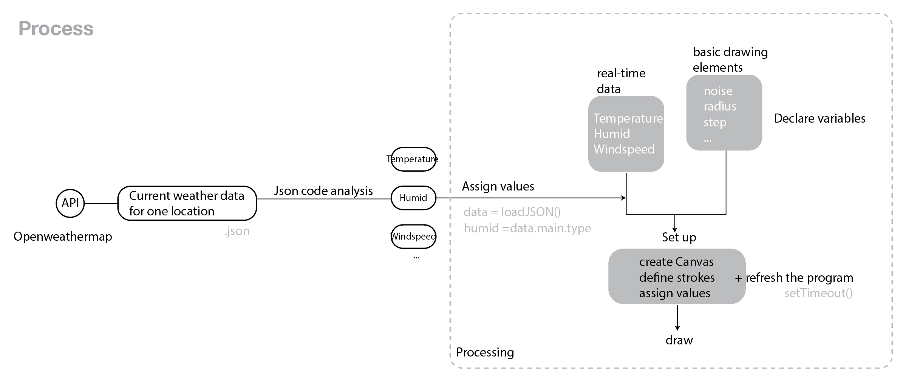

Week 3
Mini Project
Basic Information
Check here
Details
Original Ideas
Processing is a flexible software sketchbook and a language for learning how to code within the context of the visual arts.We all know some it can achieve the visualization effect of audio and physical movement through the sensor's serial port. It could be fun to visualize some data from internet. ( btw I really want to make a 'word cloud' to see how often does Trump say the word 'Fake News'.)
challenges encountered
(1)How to find the API
http://api.openweathermap.org/data/2.5/weather?q= yourcity APPID=Your APPID
Google search - Free API - Ask for API key - read the documents
(2)How to assign the data to variables in the program
let earthquakes;function preload() {let url = 'https://earthquake.usgs.gov/earthquakes/feed/v1.0/' +'summary/all_day.geojson';earthquakes = loadJSON(url);
(3)How to make it real-time
SetTimeout(function, time)
(4)In what language?
Progressing / P5.js / Python
tools and methods
Some really useful Tutorials
The nature of code Processing in P5.js Shiffman's Youtube Channel3 Quotes
“Such characterizations can be misleading because the ca- pabilities and possible uses of tools are often mis- understood and the significance of the level of fin- ish is often unclear, particularly to non-designers.”
This is inspiring. When we are doing prototypes, we need to focus on the specific audience and ask the most important questions that lead to a good design. Some time too obsessed with technologies and tools can be time-wasted and one may get confused or distracted. As the author says, a good prototype does not necessarily correspond to the solidity of the design.
“Making separate prototypes enabled specific design questions to be addressed with as much clarity as possible. ”
In this article, The prototyping methods are divided into four categories with four different purposes. There are also several techniques for each methods, such as storyboards, interactive interfaces etc. When figuring out main problems and relationships between designer and audience, the prototyping process could be more efficent.
“ The pizza box was a very efficient prototype. Spend- ing virtually no time building it or considering options, the students got useful feedback on a basic design question—what physical form would be best for the user. .”
This is a really straightforward cases. We prototype because we want to figure ou specific problems. Designers can use various tools and materials to achieve this goal.